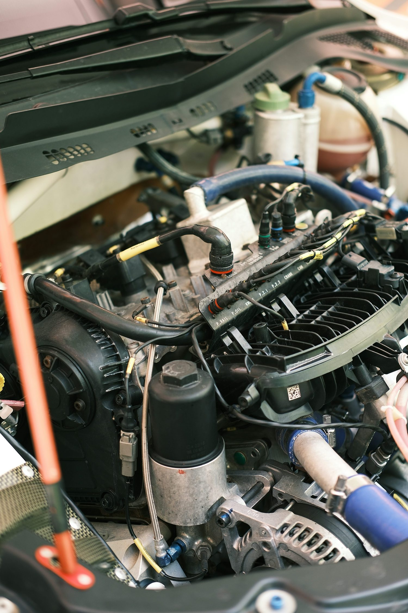

Lubricentro · Pitrufquén
Nada que
esconder
La duda de siempre es si le echaron el aceite que pagó. Acá está escrito, paso por paso, todo lo que pasa en esos veinte minutos.
- nota en Google
- 5,0
- reseñas
- 81
El checklist completo
El cambio de aceite,
minuto a minuto
Un cambio bien hecho es más que sacar y poner aceite. Estos son los seis pasos, con lo que se revisa en cada uno.
-
Se levanta y se revisa abajo
Antes de tocar el tapón se mira si hay filtraciones. Una mancha fresca en el cárter cambia todo el trabajo: no sirve de nada llenar algo que gotea.
-
Se drena en caliente
El aceite tibio sale entero y arrastra lo que hay en suspensión. En frío queda un resto pegado al fondo que ensucia el aceite nuevo desde el día uno.
-
Filtro nuevo, y el sello aceitado
El filtro se cambia siempre, no una vez sí y otra no. La goma del sello se unta con aceite antes de montar: seco, se retuerce y filtra.
-
Se llena con lo que dice el manual
La viscosidad la manda el fabricante del auto, no el gusto del taller. Se llena, se espera y se mide con la varilla — no se calcula de memoria.
-
Los otros niveles y la presión
Refrigerante, líquido de frenos, agua del limpiaparabrisas y presión de los cuatro neumáticos. Son cinco minutos y evitan la mitad de las panas de carretera.
-
Luces, y el sticker
Se prueban luces y se pega el sticker con el kilometraje del próximo cambio. Ahí termina, y el auto sale sabiendo cuándo tiene que volver.
Descripción general del procedimiento. Lo que corresponde a su vehículo lo determina el manual del fabricante y el taller.

Lo que pasa arriba del capot
Veinte minutos que nadie mira
El auto entra, se levanta el capot y el cliente se queda afuera tomando café. Esos veinte minutos son toda la desconfianza del rubro: no se sabe qué aceite entró, si cambiaron el filtro o si sólo lo limpiaron. La página los escribe paso por paso, con el número de cada envase que se abre. Eso no lo publica ningún lubricentro y es exactamente lo que un cliente nuevo necesita leer antes de elegir.
El objeto que todos llevan pegado
El sticker
del parabrisas
Ese numerito pegado arriba a la izquierda lo mira todo el mundo y casi nadie sabe leerlo del todo. Dice una cosa simple: en qué kilómetro corresponde el próximo cambio.
- El número grande
- Es el kilometraje al que hay que volver, no los kilómetros que lleva el auto. Si dice 80.000, es cuando el odómetro marque eso.
- La fecha, cuando la trae
- Vale igual que el kilometraje, y manda la que llegue primero. Un auto que anda poco igual necesita el cambio: el aceite se degrada con el tiempo.
- Por qué a veces es antes
- Camino de ripio, remolque, muchos viajes cortos en frío o mucho ralentí acortan el intervalo. El polvo del ripio es el peor de todos.
- Si se despegó
- El dato queda en la ficha del taller: basta pasar y preguntar. Nadie debería tener que adivinar cuándo le toca.
Orientación general. El intervalo exacto de su auto está en el manual del fabricante.
Pedir hora
Diga qué auto es y cuándo puede pasar: el mensaje se arma solo.